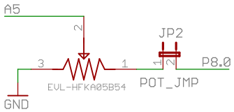

IIC2344 - Clase VI
Uso del ADC
José Luis Honorato L.
jlhonora@ing.puc.cl
ADC
- ADC:Analog to digital converter, conversor análogo-digital
- Toma muestras de una señal continua, la discretiza y la transforma en un número digital
- Puede tener muchos niveles. Entre más niveles, mejor calidad
- 5529: 12 bits (4096 niveles)
- Telefonía fija (PCM): 8 bits
Parámetros importantes de los ADC
- Resolución: número de bits por muestra
- Rapidez: muestras por segundo
- Niveles máximos, rangos de saturación
msp430: ADC12
- En msp430, módulo ADC: ADC12
- 12 bits
- Hasta 200k muestras/segundo
- DMA: hasta 16 muestras sin intervención de la CPU
- 12 entradas independientes
Configuración de hardware
- 
- P8.0 para alimentar el potenciómetro
- P6.5 (A5) para leer el voltaje análogo
Seteo ADC12
- Setear función de los pines
- Setear ADC12ENC = 0
- Modificar registros ADC12CTL0 y 1
- Setear ADC12ON = 1
- Capítulo 26 Family Guide 5xx
Seteo ADC
- Sample and Hold: 128 ciclos
- ADC clock source select: ACLK
- Input channel: A5
Tomar una muestra
- Configurar registros
- Setear ADC12SC = 1 y ADC12ENC = 1 en la misma instrucción
- Polling a ADC12BUSY hasta que termine el muestreo
- Mover resultado de ADC12MEM0 a variable